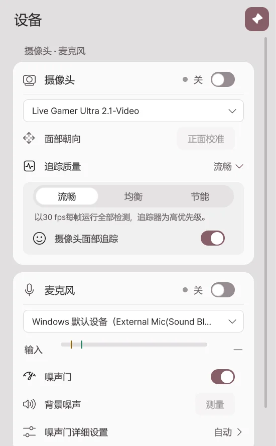
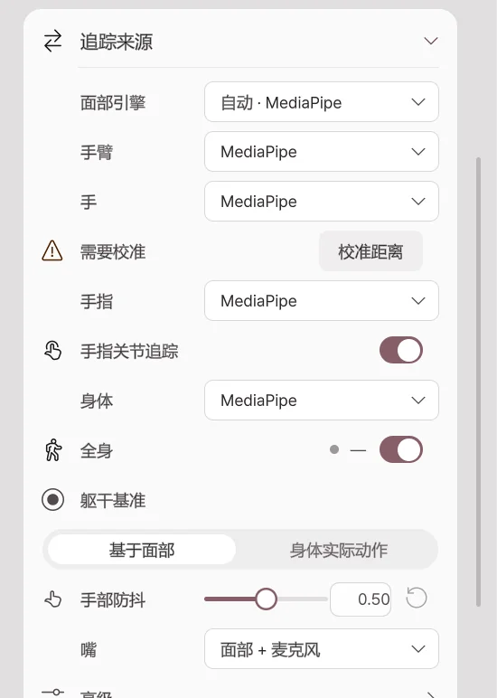
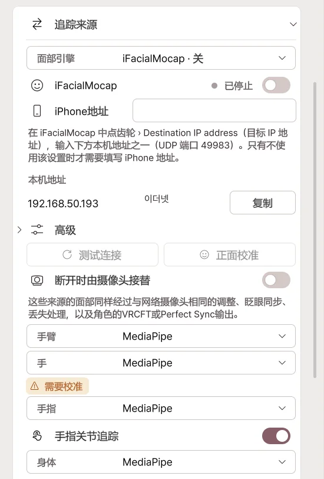
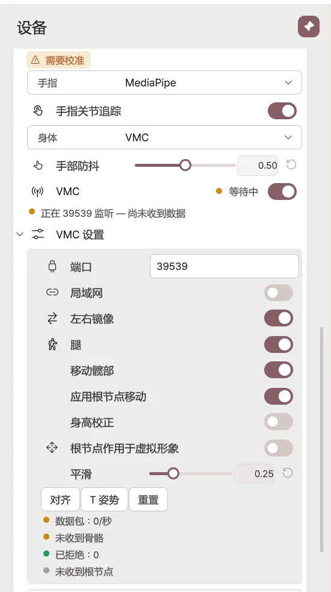
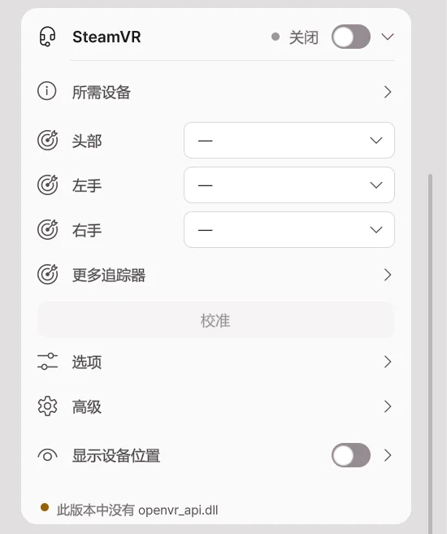

设备
连接网络摄像头、麦克风和追踪器，并选择用于脸部、身体和手部的输入。
网络摄像头和麦克风

| 按钮·项目 | 操作方式 |
|---|---|
| 网络摄像头开关 | 开始或停止使用所选摄像头进行跟踪。 |
| 摄像头列表 | 选择要使用的网络摄像头。 |
| 正面校正 | 将当前观看的方向调整为角色的正面。 |
| 跟踪质量 | '平滑' 会频繁计算动作。'平衡·节能' 会减轻电脑负担。 |
| 麦克风开关 | 开始或停止所选麦克风的输入动作。 |
| 输入条 | 显示声音的输入大小。说话时请确认是否有动作。 |
| 噪声门 | 防止在小声音时打开麦克风。 |
| 背景噪声测量 | 测量不说话时的声音，以调整噪声标准。 |
提高噪声门的阈值会减少对键盘声的反应，但也可能忽略小声。嘴巴运动不明显时，可以尝试降低阈值。
跟踪来源

选择分别用脸、嘴、头、眼睛、手臂、手、手指、身体来移动什么。
| 选择 | 使用时 |
|---|---|
| 网络摄像头 | 跟随摄像头中显示的我的脸、身体和手移动。 |
| iPhone | 使用 iPhone 的人脸应用移动表情和头部。 |
| VMC | 接收其他动作捕捉应用或追踪器应用的动作。 |
| Ultraleap | 使用专用手部追踪器移动手。 |
| SteamVR | 将 HMD、控制器、追踪器连接到身体部位。 |
| 关闭 | 不使用该部位的任何追踪输入。 |
例：脸部使用 iPhone，手臂和手使用网络摄像头。即使设备已连接，如果该部位的来源指向其他输入，也不会移动。
网络摄像头全身与手指
- 全身：追踪摄像头中显示的躯干和腿部。被桌子遮挡的腿不会像实际可见一样被追踪。
- 手指关节追踪：跟随手指关节的弯曲和伸展。
- 手部抖动校正：提高该值可减少细微抖动，快速动作会稍有延迟。
iPhone 连接

- 将 iPhone 和电脑连接到相同的 Wi-Fi。
- 在人脸引擎中选择 iFacialMocap 或 FaceMotion3D。
- 复制此电脑地址，并将其输入手机应用的发送目标地址。
- 打开输入开关，短暂地看向正面。首次面部输入后约3秒，开始校正。
- 在连接测试中确认数据是否进来。
| 项目 | 打开或更改时 |
|---|---|
| 镜像 | 将左右移动如镜子般反映。 |
| 如果断开则使用网络摄像头 | 在手机连接断开期间切换到网络摄像头。 |
| iPhone 地址 | 在不将 PC 地址输入手机应用的方式下使用。在一般连接中可以留空。 |
VMC 连接

- 在发送应用中开启 VMC 发送，并发送到此 PC 的接收地址和端口。
- 在追踪源处用VMC固定要接收的部位。
- 确认在 VMC 设置中是否显示接收到的本数和输入状态。
- 如果身体方向或手臂不正确，就调整成T字姿势或排齐。
已完成 VMC 追踪测试的设备： ReboCap、HTC VIVE Tracker、Tundra Tracker。
SteamVR 连接

- 在 SteamVR 中确认是否识别 HMD、控制器和追踪器。
- 设备 → 打开 SteamVR。
- 将装置连接到头部、手部、身体等相应部位。
- 进行校正以匹配角色和我的设备位置。
如果设备连接正常但运动异常，请在动作中检查平滑、校正和追踪回归设置。